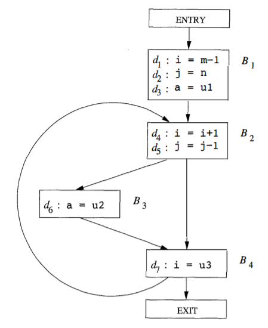
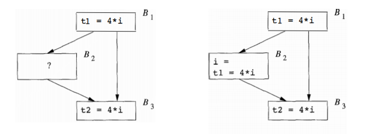

2. machine-independent
optimizations (2)
3. 数据流分析
(1). 数据流抽象
程序的状态由程序中所有变量的值组成，它与中间代码语句前后的程序点相关联，程序的执行过程可视为状态的转换。对于流图:
- 在基本块内部，一条语句后和它的下一条语句前的程序点相同
- 在基本块之间，如果存在一条从基本块 $\small B_1$ 到 $\small B_2$ 的边，$\small B_2$ 第一条语句前的程序点可能紧跟在 $\small B_1$ 之后
(2). 数据流分析模式
所有的数据流分析都会把程序点和一个数据流值关联，作为状态的抽象表示。
- 语句:
- 程序点: $\small\mathrm{IN}[s]，\mathrm{OUT}[s]$
- 传递函数 $\small f_s$，信息可能沿着路径正向传播，也可能逆向流动
- 基本块:
- 程序点: $\small\mathrm{IN}[B]=\mathrm{IN}[s_1]=\bigcup_{pred}\mathrm{OUT}[P]$，(逆向: $\small\mathrm{OUT}[B]=\mathrm{OUT}[s_n]=\bigcup_{succ}\mathrm{IN}[S]$)
- 传递函数 (正向): $\small f_B=f_{sn}\cdot ...\cdot f_{s2}\cdot f_{s1}$
4. 到达定值分析
(1). 定义
- 变量 $\sf x$ 的定值: 可能将一个值赋给 $\sf x$ 的语句
- 到达定值 (
reaching definition ): 如果存在一条从紧跟在 $\sf x$ 的定值 $\it d$ 后面的点到某个程序点 $\it p$ 的路径，则称定值 $\it d$ 到达程序点 $\it p$ - 杀死: 定值 $\it d$ 到达程序点 $\it p$ 的路径上有对 $\sf x$ 的其他定值 $\mathit{d}\tt '$，则 $\it d$ 被 $\mathit{d}\tt '$ 杀死
- 直观意义: 若变量 $\sf x$ 的定值到达点 $p$，在 $p$ 处使用的 $\sf x$ 的值可能是由 $d$ 最后赋予的
e.g.4-1 设空基本块 $\small\rm ENTRY$ 和 $\small\rm EXIT$ 分别代表流图的开始点和结束点，计算各基本块入口处的到达定值

$\mathrm{IN}[B]$ $B_2$ $B_3$ $B_4$ $d_1$ $\checkmark$ $\times$ $\times$ $d_2$ $\checkmark$ $\times$ $\times$ $d_3$ $\checkmark$ $\checkmark$ $\checkmark$ $d_4$ $\times$ $\checkmark$ $\checkmark$ $d_5$ $\checkmark$ $\checkmark$ $\checkmark$ $d_6$ $\checkmark$ $\checkmark$ $\checkmark$ $d_7$ $\checkmark$ $\times$ $\times$
(2). 传递函数
形如 $d:\mathsf{u=v+w}$ 的定值语句会生成一个对 $\sf u$ 的定值，同时杀死所有之前对 $\sf u$ 的定值
- 定值 $ d$: $f_d(x)=\mathit{gen} _ d\cup (x-\mathit{kill} _ d)$
- 基本块 $\small B$: $f_B(x)=\mathit{gen} _ B\cup (x-\mathit{kill} _ B)$
- $\mathit{kill}_B=\mathit{kill} _ 1\cup\mathit{kill}_2\cup ...\cup\mathit{kill}_n$
- $\mathit{gen}_B=\mathit{gen}_n\cup(\mathit{gen}_{n-1}-\mathit{kill}_n)\cup ...\cup(\mathit{gen}_1-\mathit{kill}_1-\mathit{kill}_2-...-\mathit{kill}_n)$
e.g.4-2 (续 4-1) 计算各基本块的 $\it gen_B$ 和 $\it kill_B$
$\mathit{gen}_{B1}=\lbrace \mathit{d_1,\ d_2,\ d_3} \rbrace$， $\mathit{kill}_{B1}=\lbrace \mathit{d_4,\ d_5,\ d_6,\ d_7} \rbrace$
$\mathit{gen}_{B2}=\lbrace \mathit{d_4,\ d_5} \rbrace$， $\mathit{kill}_{B2}=\lbrace \mathit{d_1,\ d_2,\ d_7} \rbrace$
$\mathit{gen}_{B3}=\lbrace \mathit{d_6} \rbrace$， $\mathit{kill}_{B3}=\lbrace \mathit{d_3} \rbrace$
$\mathit{gen}_{B4}=\lbrace \mathit{d_7} \rbrace$， $\mathit{kill}_{B4}=\lbrace \mathit{d_1,\ d_4} \rbrace$
(3). 数据流方程
- $\small\mathrm{OUT}[B]$: 到达基本块 $\small B$ 出口处定值的集合
- $\small\mathrm{OUT[ENTRY]}=\emptyset$
- $\small\mathrm{OUT}[B]=$ $f_B$ $\small(\mathrm{IN}[B])$ $=\mathit{gen}_B\cup$ $\small(\mathrm{IN}[B]$ $-\mathit{kill}_B)$
- $\small\mathrm{IN}[B]$: 到达基本块 $\small B$ 入口处定值的集合
- $\small\mathrm{IN}[B]=\bigcup_{\mathit{pred\ of\ B}}\mathrm{OUT}[P]$ ($\small B\ne\mathrm{ENTRY}$)
(4). 到达定值计算
Input:流图 G,其中每个基本块 B的 genB、killB都已被计算好 Output: IN[B]和 OUT[B] OUT[ENTRY] = ∅ for (除了 ENTRY的每个基本块 B) OUT[B] = ∅ while (某个基本块的 OUT值发生改变 ) { for (除了 ENTRY的每个基本块 B) { IN[B] = ⋃pred of BOUT[P] OUT[B] = genB ⋃ (IN[B] - killB) } }
e.g.4-3 (续 4-2) 通过上述算法计算到达定值
3 次迭代后收敛，和
$B$ $\mathrm{OUT}[B]^0$ $\mathrm{IN}[B]^1$ $\mathrm{OUT}[B]^1$ $\mathrm{IN}[B]^2$ $\mathrm{OUT}[B]^2$ $\mathrm{IN}[B]^3$ $\mathrm{OUT}[B]^3$ $B_1$ $000\ \ 0000$ $000\ \ 0000$ $111\ \ 0000$ $000\ \ 0000$ $111\ \ 0000$ $000\ \ 0000$ $111\ \ 0000$ $B_2$ $000\ \ 0000$ $111\ \ 0000$ $001\ \ 1100$ $111\ \ 0111$ $001\ \ 1110$ $111\ \ 0111$ $001\ \ 1110$ $B_3$ $000\ \ 0000$ $001\ \ 1100$ $000\ \ 1110$ $001\ \ 1110$ $000\ \ 1110$ $001\ \ 1110$ $000\ \ 1110$ $B_4$ $000\ \ 0000$ $001\ \ 1110$ $001\ \ 0111$ $001\ \ 1110$ $001\ \ 0111$ $001\ \ 1110$ $001\ \ 0111$ $\rm EXIT$ $000\ \ 0000$ $001\ \ 0111$ $001\ \ 0111$ $001\ \ 0111$ $001\ \ 0111$ $001\ \ 0111$ $001\ \ 0111$ 4-1 中人工得到的结果一致
(5). 引用定值链
引用-定值链 (
- 若基本块 $\small B$ 中 $\sf a$ 的引用前有 $\sf a$ 的定值，那么只有 $\sf a$ 的最后一次定值会在该引用的
ud 链中 - 若基本块 $\small B$ 中 $\sf a$ 的引用前没有 $\sf a$ 的定值，那么 $\sf a$ 此次引用的
ud 链就是 $\small\mathrm{IN}[B]$ 中 $\sf a$ 的定值的集合
(6). 应用
- 检测循环不变计算: 若循环中有 $\sf x=y+z$，且 $\sf y、z$ 所有可能的定值都在循环外 (特殊情况: 常数)，则 $\sf y+z$ 是循环不变计算
- 常量合并: 如果 $\sf x$ 的某次使用只有一个定值可以到达，且该定值把一个常量赋给 $\sf x$，那么可以简单地把 $\sf x$ 替换为该常量
- 判定 $\sf x$ 在 $p$ 点是否未经定值就引用
5. 活跃变量分析
(1). 定义
活跃变量：对于变量 $\sf x$ 和程序点 $p$，若流图中沿着从 $p$ 开始的某路径会引用 $\sf x$ 在 $p$ 处的值，则称 $\sf x$ 在点 $p$ 是活跃 (
e.g.5-1 计算各基本块出口处的活跃变量
$\mathrm{OUT}[B]$ $B_1$ $B_2$ $B_3$ $B_4$ $\sf a$ $\times$ $\times$ $\times$ $\times$ $\sf i$ $\checkmark$ $\times$ $\times$ $\checkmark$ $\sf j$ $\checkmark$ $\checkmark$ $\checkmark$ $\checkmark$ $\sf m$ $\times$ $\times$ $\times$ $\times$ $\sf n$ $\times$ $\times$ $\times$ $\times$ $\sf u1$ $\times$ $\times$ $\times$ $\times$ $\sf u2$ $\checkmark$ $\checkmark$ $\checkmark$ $\checkmark$ $\sf u3$ $\checkmark$ $\checkmark$ $\checkmark$ $\checkmark$
(2). 传递函数
活跃变量分析是逆向数据流问题，活跃变量信息沿着控制流反方向计算 ($\small\mathrm{IN}[B]=f_B(\mathrm{OUT}[B])$
- $\mathit{def}_B$: 在 $\small B$ 中定值，但定值前在 $\small B$ 中没有被引用的变量的集合
- $\mathit{use}_B$: 在 $\small B$ 中引用，但引用前在 $\small B$ 中没有被定值的变量的集合
- $f_B(x)=\mathit{use} _ B\cup (x-\mathit{def} _ B)$
e.g.5-2 (续 5-1) 计算各基本块的 $\it def_B$ 和 $\it use_B$
$\mathit{def}_{B1}=\lbrace \mathsf{m,\ n,\ u1} \rbrace$， $\mathit{use}_{B1}=\lbrace \mathsf{i,\ j,\ a} \rbrace$
$\mathit{def}_{B2}=\lbrace \mathsf{i,\ j} \rbrace\ $， $\mathit{use}_{B2}=\emptyset$
$\mathit{def}_{B3}=\lbrace \mathsf{u2} \rbrace$， $\mathit{use}_{B3}=\lbrace \mathsf{u3} \rbrace$
$\mathit{def}_{B4}=\lbrace \mathsf{a} \rbrace$， $\mathit{use}_{B4}=\lbrace \mathsf{i} \rbrace$
(3). 数据流方程
- $\small\mathrm{IN}[B]$: 到达基本块 $\small B$ 入口处活跃变量的集合
- $\small\mathrm{IN[EXIT]}=\emptyset$
- $\small\mathrm{IN}[B]=$ $f_B$ $\small(\mathrm{OUT}[B])$ $=\mathit{use}_B\cup$ $\small(\mathrm{OUT}[B]$ $-\mathit{def}_B)$
- $\small\mathrm{OUT}[B]$: 到达基本块 $\small B$ 出口处活跃变量的集合
- $\small\mathrm{OUT}[B]=\bigcup_{\mathit{succ\ of\ B}}\mathrm{IN}[S]$ ($\small B\ne\mathrm{EXIT}$)
(4). 活跃变量计算
Input:流图 G,其中每个基本块 B的 defB、useB都已被计算好 Output: IN[B]和 OUT[B] IN[EXIT] = ∅ for (除了 EXIT的每个基本块 B) IN[B] = ∅ while (某个基本块的 IN值发生改变 ) { for (除了 EXIT的每个基本块 B) { OUT[B] = ⋃succ of BIN[S] IN[B] = useB ⋃ (OUT[B] - defB) } }
e.g.5-3 (续 5-2) 通过上述算法计算活跃变量
3 次迭代后收敛，和
$B$ $\mathrm{OUT}[B]^1$ $\mathrm{IN}[B]^1$ $\mathrm{OUT}[B]^2$ $\mathrm{IN}[B]^2$ $\mathrm{OUT}[B]^3$ $\mathrm{IN}[B]^3$ $B_4$ $\sf u3$ $\sf i,\ j,\ u2,\ u3$ $\sf j,\ u2,\ u3$ $\sf i,\ j,\ u2,\ u3$ $\sf j,\ u2,\ u3$ $B_3$ $\sf u3$ $\sf u2,\ u3$ $\sf j,\ u2,\ u3$ $\sf j,\ u2,\ u3$ $\sf j,\ u2,\ u3$ $\sf j,\ u2,\ u3$ $B_2$ $\sf u2,\ u3$ $\sf i,\ j,\ u2,\ u3$ $\sf j,\ u2,\ u3$ $\sf i,\ j,\ u2,\ u3$ $\sf j,\ u2,\ u3$ $\sf i,\ j,\ u2,\ u3$ $B_1$ $\sf i,\ j,\ u2,\ u3$ $\sf m,\ n,\ u1,\ u2,\ u3$ $\sf i,\ j,\ u2,\ u3$ $\sf m,\ n,\ u1,\ u2,\ u3$ $\sf i,\ j,\ u2,\ u3$ $\sf m,\ n,\ u1,\ u2,\ u3$ 5-1 中人工得到的结果一致
(5). 定值引用链
定值-引用链 (
- 若基本块 $\small B$ 中 $\sf x$ 的定值 $d$ 后有 $\sf x$ 的下一个定值 $d'$，则 $d$ 和 $d'$ 之间 $\sf x$ 的所有引用构成 $d$ 的
du 链 - 若基本块 $\small B$ 中 $\sf x$ 的定值 $d$ 后没有新的定值，则 $\small B$ 中 $d$ 之后 $\sf x$ 的所有引用以及 $\small\mathrm{OUT}[B]$ 中 $\sf x$ 的所有引用构成 $d$ 的
du 链
(6). 应用
- 删除无用赋值: $\sf x$ 在点 $p$ 的定值在基本块内没有被引用，且在基本块出口后又是不活跃的，那么此定值就是无用的
- 为基本块分配寄存器: 确定寄存器中哪些值是不活跃的 (
dead ) 以腾出空间，且不必为不活跃的值分配寄存器
6. 可用表达式分析
(1). 定义
- 可用表达式: 若从流图的首节点到程序点 $p$ 的每条路径都对表达式 $\sf x\ op\ y$ 进行计算，且各条路径上最后一个计算到 $p$ 之间没有对 $\sf x$ 和 $\sf y$ 重新定值，则表达式 $\sf x\ op\ y$ 在 $p$ 是可用的 (
available ) - 直观意义: 在 $p$ 处，表达式 $\sf x\ op\ y$ 无需重新计算
e.g.6-1 若 $\sf 4*i$ 在 $\small B_3$ 入口处可用，$\small B_2$ 需满足的条件

$\small B_2$ 没有对 $\sf i$ 重新定值，或对 $\sf i$ 重新定值后又再次计算了 $\sf 4*i$
(2). 传递函数
- 若基本块 $\small B$ 对 $\sf x\ op\ y$ 进行计算，且之后没有重新定值 $\sf x$ 或 $\sf y$，则称 $\small B$ 生成表达式 $\sf x\ op\ y$
- $\mathit{e\_gen}_B$: 基本块 $\small B$ 生成的可用表达式集合
- 若基本块 $\small B$ (可能) 对 $\sf x$ 或 $\sf y$ 定值，且以后没有重新计算 $\sf x\ op\ y$，则称 $\small B$ 杀死该表达式
- $\mathit{e\_kill}_B$: 基本块 $\small B$ 杀死的 $\small U$ 中的可用表达式集合 ($\small U$: 程序右部表达式全集)
- $f_B(x)=\mathit{e\_gen}_B\cup(x-\mathit{e\_kill}_B)$
顺序扫描块中每个表达式 $\sf z=x\ op\ y$： - 计算 $\mathit{e\_gen}_B$: 把 $\sf x\ op\ y$ 加入 $\mathit{e\_gen}_B$，并从中删除和 $\sf z$ 相关的表达式
- 计算 $\mathit{e\_kill}_B$: 从 $\mathit{e\_kill}_B$ 中删除 $\sf x\ op\ y$，并把所有和 $\sf z$ 相关的表达式加入其中
(3). 数据流方程
- $\small\mathrm{OUT}[B]$: 在 $\small B$ 的出口处可用的 $\small U$ 中的表达式集合
- $\small\mathrm{OUT[ENTRY]}=\emptyset$
- $\small\mathrm{OUT}[B]=$ $f_B$ $\small(\mathrm{IN}[B])$ $=\mathit{e\_gen}_B\cup$ $\small(\mathrm{IN}[B]$ $-\mathit{e\_kill}_B)$
- $\small\mathrm{IN}[B]$: 在 $\small B$ 的入口处可用的 $\small U$ 中的表达式集合
- $\small\mathrm{IN}[B]=\bigcap_{\mathit{pred\ of\ B}}\mathrm{OUT}[P]$ ($\small B\ne\mathrm{ENTRY}$)
(4). 可用表达式计算
Input:流图 G,其中每个基本块 B的 e_genB、e_killB都已被计算好 Output: IN[B]和 OUT[B] OUT[ENTRY] = ∅ for (除了 ENTRY的每个基本块 B) OUT[B] = U while (某个基本块的 OUT值发生改变 ) { for (除了 ENTRY的每个基本块 B) { IN[B] = ⋂pred of BOUT[P] OUT[B] = e_genB ⋃ (IN[B] - e_killB) } }
(5). 应用
- 消除全局公共子表达式
- 复制传播，把 $\sf x=y$ 看作特殊的表达式：若 $\sf x=y$ 在点 $p$ 处可用，就可把 $p$ 处对 $\sf x$ 的引用替换为 $\sf y$